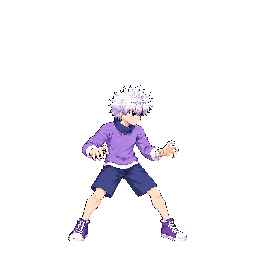

These are the selected v02 candidates extracted from the temporary, quantized whole-character atlas. The temporary manifest marked v02 approved only to allow atlas extraction; the branch manifest remains unapproved and no diagnostic output is shipped. Raw images miss the requested exact strip canvas dimensions; the packer found poses but reported several touching/cut-figure splits. Astra inspected all 70 cells of this exact atlas and holds all ten: disconnected limbs, phase errors, clipped or margin-limited strikes, or unresolved full-body scale/style checks remain. The exact raw images are illustrated rather than hard-pixel source art. Some earlier edge-clipping concerns were withdrawn after inspecting this exact pack; see each move below. Please review the drawings while keeping the technical hold in mind; this review does not approve shipping.
Atlas SHA-256: b66a685b321f548570f4ddbb70392068972dcc20d9c3b08e8bd26e5fde69b41a; anims SHA-256: 60b4dddc3d139aeb6cc92089688eecdd42b7f5ba9e5ed28e2d10eaf30d69edbf. Each candidate and stand-in crop below is taken from the quantized sheet cells at 256×256, beside approved idle f0.
